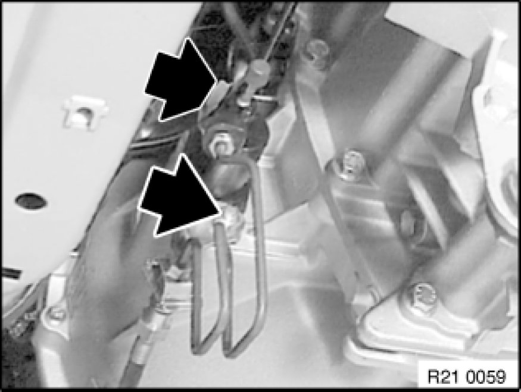
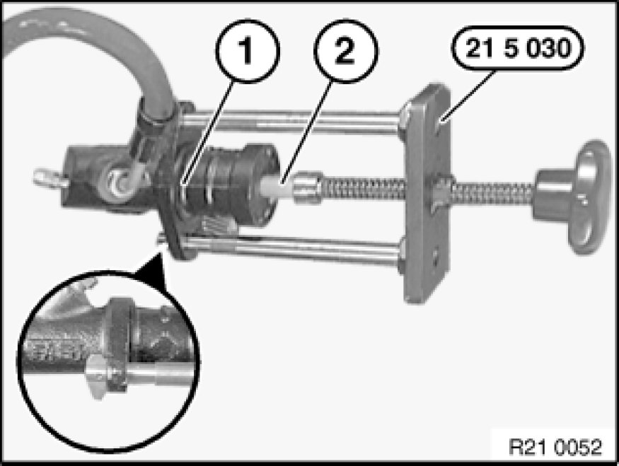
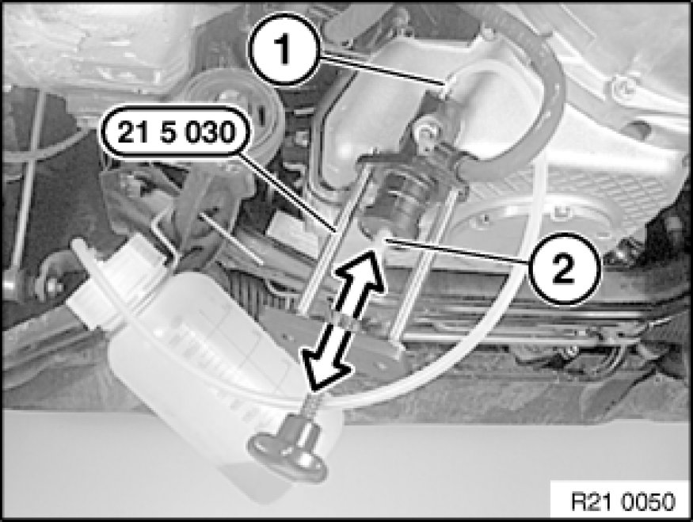

Clutch Hydraulic System: Service and Repair
21 00 006 - Bleeding clutch hydraulic system

Special tools required:
- 21 5 030

Necessary preliminary tasks:
- Remove transmission underbody protection if necessary.
- Remove microfilter housing is necessary.

Important!
From 08.06 a plastic clutch slave cylinder is installed in the E8X, E9X.
Important notes on installation are described in this work step.

Unfasten nuts and remove clutch slave cylinder (pressure line remains connected).

Fit special tool 21 5 030 on clutch slave cylinder (1).
Press piston rod (2) with aid of spindle completely into clutch slave cylinder.
Connect bleeder unit to brake fluid expansion tank.
Important!
Check relevant Operating Instructions for each device.
Charging pressure should not exceed 2 bar.

Connect bleeder hose to bleed valve (1).
Hold clutch slave cylinder in illustrated position (refer to figure) with special tool 21 5 030.
Open bleeder valve (1).
If bubble-free brake fluid emerges, retract piston rod (2) of clutch slave cylinder with aid of spindle a little and press in again.
If no air bubbles escape, close bleeder valve (1), otherwise repeat procedure.
Important!
Do not under any circumstances remove special tool 21 5 030 from clutch slave cylinder when brake system is pressurized.
Piston with push rod can jump out of clutch slave cylinder.
Switch off bleeder unit or remove from brake fluid expansion tank.
Slowly retract piston rod (2) of clutch slave cylinder (1) with special tool 21 5 030.
Remove special tool 21 5 030 from clutch slave cylinder (1).
Fit clutch slave cylinder to transmission.
Installation Note:
Replace self-locking nuts.
Tightening torque 21 52 5AZ [1][2]Clutch Hydraulic System.
Correct brake fluid level in expansion tank.